A Markov chain is a stochastic process in which the probability of the next state depends only on the current state, not on the earlier history. The random walk of Part 6B is one example: each step chooses a direction based only on where the walker is now. This chapter builds from Markov chains to the Metropolis-Hastings algorithm, a Markov chain Monte Carlo (MCMC) method that samples an arbitrary probability distribution by constructing a Markov chain whose stationary distribution is the one we want.
8B.1 A Markov chain: a bursting gene
Many genes are transcribed in bursts: the promoter switches between an active state, where it produces mRNA, and an inactive state, where it is silent, and it can dwell in each for a while before switching (Golding et al. 2005). We model the promoter as a two-state Markov chain, “active” and “inactive”, where each step either keeps the current state or switches it, with fixed probabilities that depend only on the current state. The state diagram shows the transition probabilities.
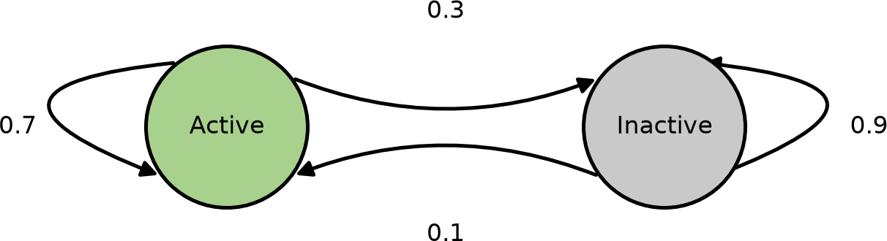
The dynamics are captured by a transition matrix\(T\), whose entry in row \(i\), column \(j\) is the probability of moving from state \(i\) to state \(j\). Each row sums to 1, since the chain must go somewhere. To simulate the chain, at each step we draw a uniform random number and use it to pick the next state from the current row of \(T\).
NoteRecipe 8B.1.1
Objective. Simulate a two-state promoter as a Markov chain and find its long-run state fractions.
Model. A two-state promoter Markov chain with transition matrix T = [[0.7, 0.3], [0.1, 0.9]] (rows from active, from inactive), so the active state leaves with probability 0.3 and the inactive with 0.1.
Method. Direct simulation of a two-state Markov chain (draw a uniform, pick the next state from the current row of T).
Show. A plot of the promoter state over the first steps, and the running active/inactive fractions.
Verification. The trajectory bursts (short active spells, long silent stretches), and the running fractions converge to about 25% active and 75% inactive.
R implementation
# simulate the promoter Markov chain; states 1 = active, 2 = inactivemarkov_gene <-function(x0, nstep) { transit <-matrix(c(0.7, 0.3, 0.1, 0.9), nrow =2, byrow =TRUE) # rows sum to 1 x <-numeric(nstep +1); x[1] <- x0for (i in1:nstep) { x[i +1] <-if (runif(1) < transit[x[i], 1]) 1else2 } x}set.seed(1)nstep <-10^4results_gene <-markov_gene(x0 =1, nstep = nstep)plot(0:1000, results_gene[1:1001], type ="l", col =2, xlab ="Step", ylab ="State",yaxt ="n", ylim =c(0.7, 2.3))axis(side =2, at =c(1, 2), labels =c("Active", "Inactive"))
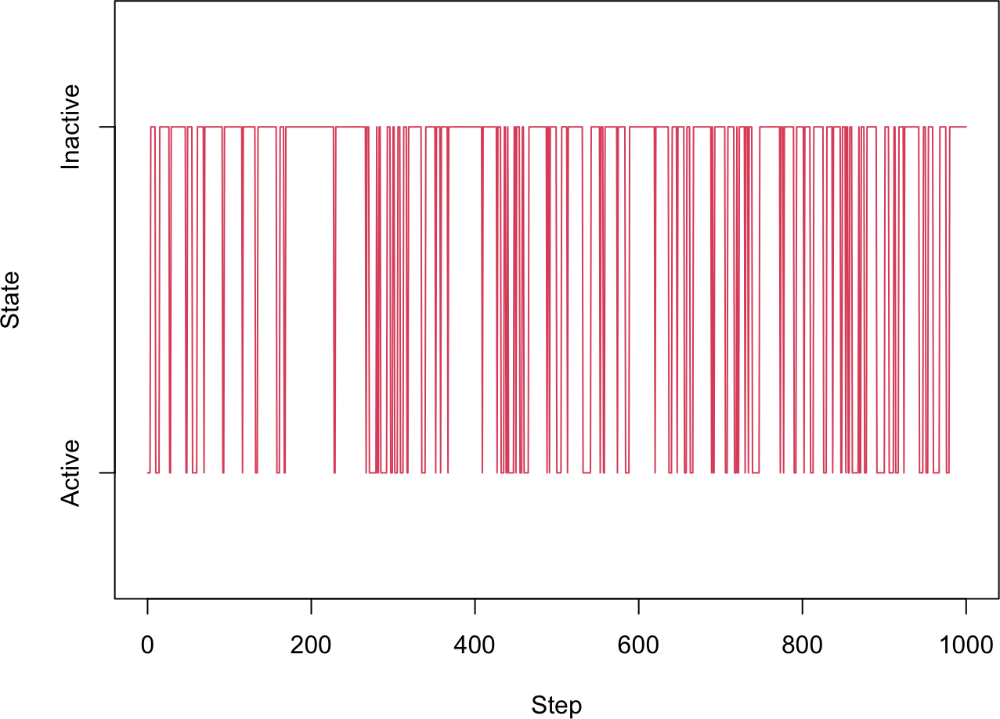
# running fraction of time spent in each statep_active <-cumsum(results_gene ==1) /seq_along(results_gene)p_inactive <-cumsum(results_gene ==2) /seq_along(results_gene)plot(seq_along(results_gene), p_active, type ="l", col =2, xlab ="Step",ylab ="Probability", ylim =c(0, 1))lines(seq_along(results_gene), p_inactive, col =4)legend("right", c("Active", "Inactive"), col =c(2, 4), lty =1)
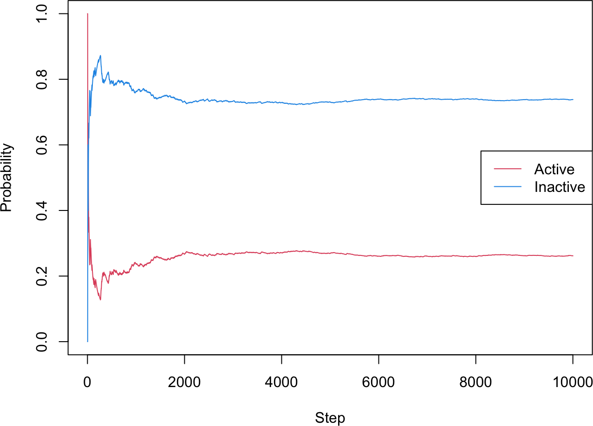
c(tail(p_active, 1), tail(p_inactive, 1))
[1] 0.2617738 0.7382262
Python implementation
import numpy as npimport matplotlib.pyplot as plt# simulate the promoter Markov chain; states 0 = active, 1 = inactive (0-based indexing)def markov_gene(x0, nstep): transit = np.array([[0.7, 0.3], [0.1, 0.9]]) # rows sum to 1 x = np.zeros(nstep +1, dtype=int); x[0] = x0for i inrange(nstep): x[i +1] =0if np.random.uniform() < transit[x[i], 0] else1return xnp.random.seed(1)nstep =10**4results_gene = markov_gene(x0=0, nstep=nstep)plt.plot(range(1001), results_gene[:1001], "r-")plt.yticks([0, 1], ["Active", "Inactive"]); plt.ylim(-0.3, 1.3)
([<matplotlib.axis.YTick object at 0x1153c1010>, <matplotlib.axis.YTick object at 0x11526fd90>], [Text(0, 0, 'Active'), Text(0, 1, 'Inactive')])
(-0.3, 1.3)
# running fraction of time spent in each statesteps = np.arange(1, len(results_gene) +1)p_active = np.cumsum(results_gene ==0) / stepsp_inactive = np.cumsum(results_gene ==1) / stepsplt.plot(steps, p_active, "r-", label="Active")plt.plot(steps, p_inactive, "b-", label="Inactive")plt.xlabel("Step"); plt.ylabel("Probability"); plt.ylim(0, 1); plt.legend(); plt.show()
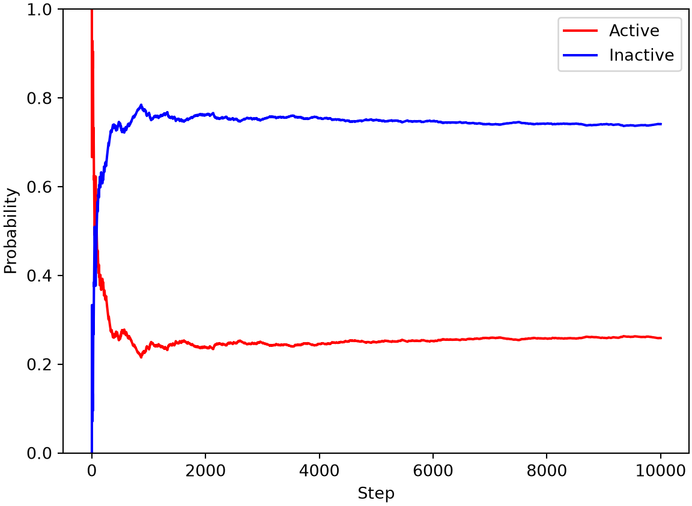
print(p_active[-1], p_inactive[-1])
0.25877412258774124 0.7412258774122588
The trajectory shows the bursting pattern: short spells in the active state separated by longer silent stretches, because the inactive state is stickier (it switches away only with probability 0.1 per step). The running fractions converge to a stable distribution, roughly 25% active and 75% inactive. (R labels the states 1 and 2, Python 0 and 1, to match each language’s array indexing; the model is identical.)
8B.2 The steady-state distribution
There is a faster way to find those long-run probabilities than simulating a long trajectory. If \(p_i\) is the row vector of state probabilities at step \(i\), then one step of the chain updates it by a matrix multiplication with the transition matrix,
\[ p_{i+1} = p_i T . \tag{1} \]
Iterating from any starting distribution converges to a fixed vector \(p_{ss}\), the steady-state (or stationary) distribution.
R implementation
# propagate the probability distribution instead of a single trajectorymarkov_gene_prob <-function(p0, nstep) { transit <-matrix(c(0.7, 0.3, 0.1, 0.9), nrow =2, byrow =TRUE) p <-matrix(0, nrow = nstep +1, ncol =2); p[1, ] <- p0for (i in1:nstep) p[i +1, ] <- p[i, ] %*% transit p}nstep <-100prob_gene <-markov_gene_prob(p0 =c(1, 0), nstep = nstep)p_ss <- prob_gene[nstep +1, ]plot(0:nstep, prob_gene[, 1], type ="l", col =2, xlab ="Step",ylab ="Probability", ylim =c(0, 1))lines(0:nstep, prob_gene[, 2], col =4)legend("right", c("Active", "Inactive"), col =c(2, 4), lty =1)
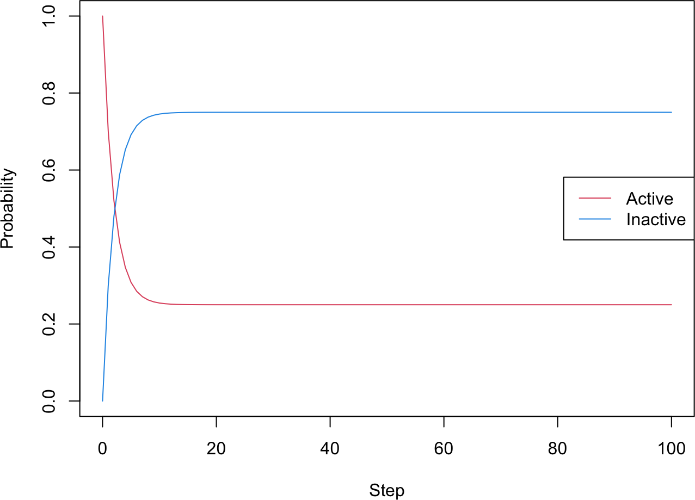
p_ss
[1] 0.25 0.75
Python implementation
# propagate the probability distribution instead of a single trajectorydef markov_gene_prob(p0, nstep): transit = np.array([[0.7, 0.3], [0.1, 0.9]]) p = np.zeros((nstep +1, 2)); p[0] = p0for i inrange(nstep): p[i +1] = p[i] @ transitreturn pnstep =100prob_gene = markov_gene_prob(np.array([1, 0]), nstep)p_ss = prob_gene[-1]plt.plot(range(nstep +1), prob_gene[:, 0], "r-", label="Active")plt.plot(range(nstep +1), prob_gene[:, 1], "b-", label="Inactive")plt.xlabel("Step"); plt.ylabel("Probability"); plt.ylim(0, 1); plt.legend(); plt.show()
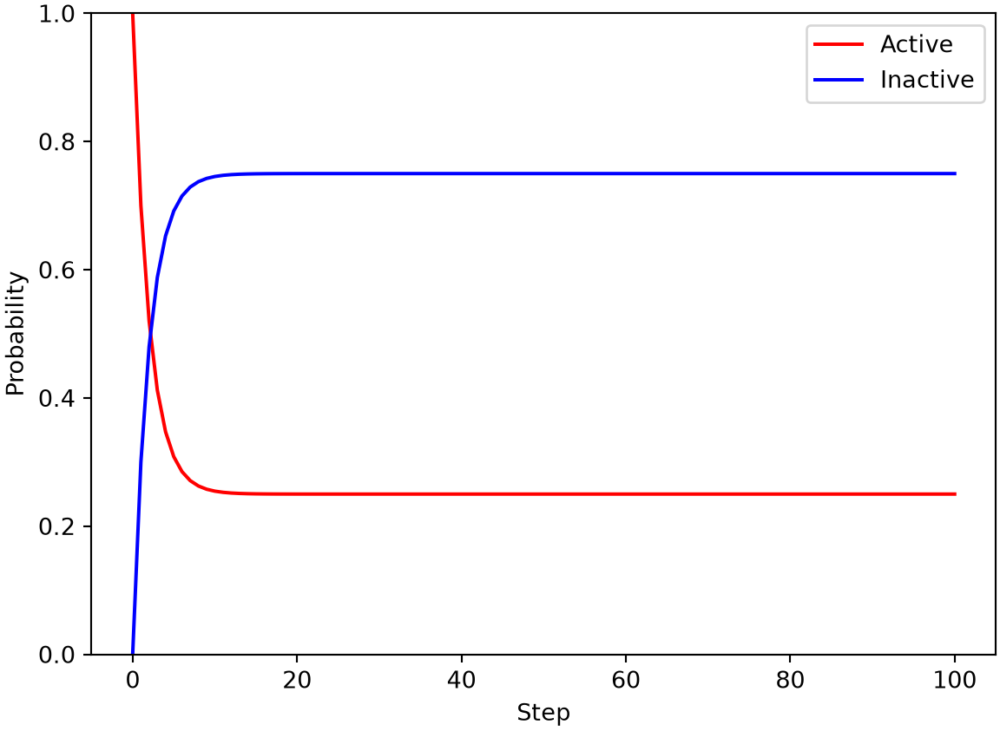
print(p_ss)
[0.25 0.75]
Starting from a fully active promoter, \(p_i\) settles within a few steps to \(p_{ss} \approx (0.25, 0.75)\), matching the fractions from the long simulation. A Markov chain has a unique steady-state distribution when it is ergodic, meaning it is both
irreducible: every state is reachable from every other state, and
aperiodic: it does not return to a state only at fixed regular intervals.
Ergodicity is the key requirement that makes Markov chain Monte Carlo work.
8B.3 The Metropolis-Hastings algorithm
Markov chain Monte Carlo turns this idea around. Instead of reading off the stationary distribution of a given chain, we are handed a target distribution \(P(x)\) and asked to build a chain whose stationary distribution is \(P\). The Metropolis-Hastings algorithm (Metropolis et al. 1953; Hastings 1970; Robert and Casella 2004) does exactly that, and it needs only the ability to evaluate \(P(x)\) up to a constant.
The construction relies on detailed balance, a stronger condition than mere stationarity:
so any chain satisfying detailed balance has \(P\) as a stationary distribution. Metropolis-Hastings builds such a chain in two steps. From the current state \(x\), we first propose a move to \(x'\) drawn from a proposal distribution \(g(x \rightarrow x')\). We then accept the move with probability
setting the next state to \(x'\) if accepted and keeping \(x\) otherwise. This acceptance rule guarantees detailed balance regardless of the proposal \(g\).
To see it in action, we resample the bursting-gene model. This time we ignore the true transition matrix and only use the steady-state distribution \(p_{ss}\) as the target. With a symmetric proposal that always suggests the other state, \(g(1 \rightarrow 2) = g(2 \rightarrow 1) = 1\), the acceptance probability simplifies to
\[ a = \min\left(1, \frac{P(x')}{P(x)}\right) . \tag{5} \]
NoteRecipe 8B.3.1
Objective. Sample a target distribution with Metropolis-Hastings and confirm it reproduces the target.
Model. The two-state bursting-gene promoter of 8B.1, now specified only by its stationary distribution p_ss = (0.25, 0.75) as the target P(x).
Method. The Metropolis-Hastings algorithm with a symmetric two-state proposal (always propose the other state), so acceptance is a = min(1, P(x')/P(x)).
Show. The sampled state fractions and the recovered transition matrix.
Verification. The sampler has a different transition matrix from the original chain yet reproduces the same stationary distribution, showing that many chains can share one stationary distribution.
R implementation
# sample the promoter states by Metropolis-Hastings using only p_ss as the targetmetropolis_gene <-function(x0, p_ss, nstep) { x <-numeric(nstep +1); x[1] <- x0for (i in1:nstep) { xnew <-3- x[i] # propose the other state (1 <-> 2) a <-min(1, p_ss[xnew] / p_ss[x[i]]) # acceptance probability x[i +1] <-if (runif(1) < a) xnew else x[i] } x}set.seed(1)nstep <-10^4results_gene2 <-metropolis_gene(x0 =1, p_ss = p_ss, nstep = nstep)p_active2 <-cumsum(results_gene2 ==1) /seq_along(results_gene2)p_inactive2 <-cumsum(results_gene2 ==2) /seq_along(results_gene2)plot(seq_along(results_gene2), p_active2, type ="l", col =2, xlab ="Step",ylab ="Probability", ylim =c(0, 1))lines(seq_along(results_gene2), p_inactive2, col =4)legend("right", c("Active", "Inactive"), col =c(2, 4), lty =1)
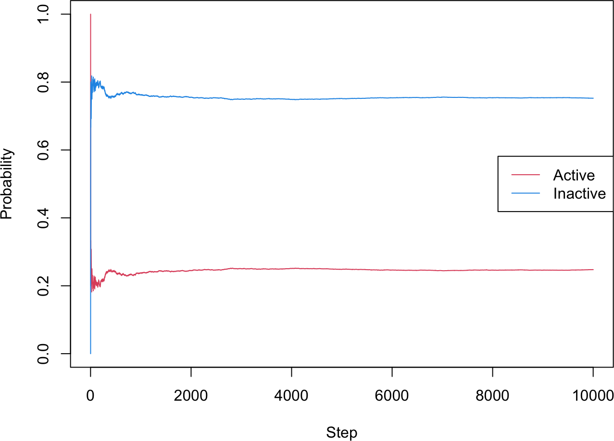
# recover the empirical transition matrix from each trajectorycal_transit <-function(x_all) { n <-length(unique(x_all)) transit <-matrix(0, n, n)for (i inseq_len(length(x_all) -1)) transit[x_all[i], x_all[i +1]] <- transit[x_all[i], x_all[i +1]] +1 transit /rowSums(transit)}cal_transit(results_gene) # the original Markov chain
# sample the promoter states by Metropolis-Hastings using only p_ss as the targetdef metropolis_gene(x0, p_ss, nstep): x = np.zeros(nstep +1, dtype=int); x[0] = x0for i inrange(nstep): xnew =1- x[i] # propose the other state (0 <-> 1) a =min(1, p_ss[xnew] / p_ss[x[i]]) # acceptance probability x[i +1] = xnew if np.random.uniform() < a else x[i]return xnp.random.seed(1)nstep =10**4results_gene2 = metropolis_gene(x0=0, p_ss=p_ss, nstep=nstep)steps = np.arange(1, len(results_gene2) +1)p_active2 = np.cumsum(results_gene2 ==0) / stepsp_inactive2 = np.cumsum(results_gene2 ==1) / stepsplt.plot(steps, p_active2, "r-", label="Active")plt.plot(steps, p_inactive2, "b-", label="Inactive")plt.xlabel("Step"); plt.ylabel("Probability"); plt.ylim(0, 1); plt.legend(); plt.show()
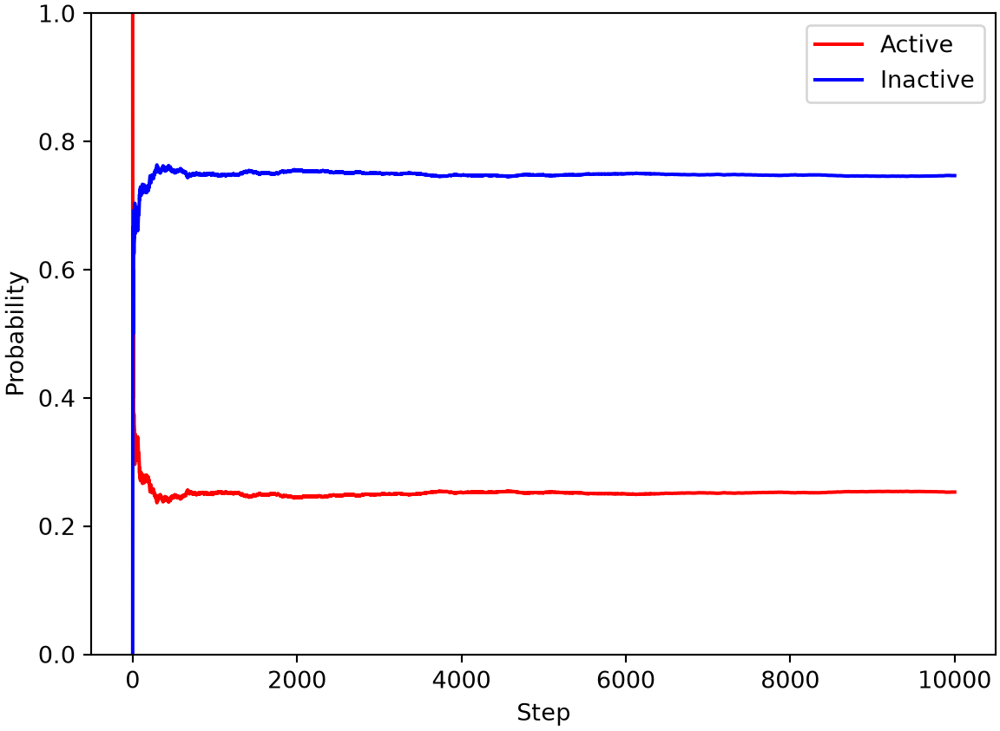
# recover the empirical transition matrix from each trajectorydef cal_transit(x_all): n =len(np.unique(x_all)) transit = np.zeros((n, n))for i inrange(len(x_all) -1): transit[x_all[i], x_all[i +1]] +=1return transit / transit.sum(axis=1, keepdims=True)print(cal_transit(results_gene)) # the original Markov chain
[[0.70904173 0.29095827]
[0.1014571 0.8985429 ]]
print(cal_transit(results_gene2)) # the Metropolis sampler
[[0. 1. ]
[0.33891269 0.66108731]]
The Metropolis sampler visits the two states with a very different transition pattern from the original chain (its recovered transition matrix is not the same), yet it reproduces the same stationary distribution. That is the point of MCMC: many different chains can share one stationary distribution, and we are free to pick a convenient one.
8B.4 Sampling a Gaussian distribution
Metropolis-Hastings really shines on continuous distributions. We sample \(P(x) \propto e^{-x^2}\) (a Gaussian with variance \(1/2\)). Starting at \(x = 0\), each step proposes \(x' = x + dx\) with \(dx\) drawn uniformly from \((-dx_\text{max}, dx_\text{max})\). This proposal is symmetric, \(g(x \rightarrow x') = g(x' \rightarrow x)\), so the acceptance probability is
The step size \(dx_\text{max}\) is a tuning knob. We try several values and compare the sampled histogram with the true density.
NoteRecipe 8B.4.1
Objective. Sample a continuous Gaussian with Metropolis-Hastings and see how the step size affects the result.
Model. A continuous target P(x) proportional to exp(-x^2), a Gaussian of variance 1/2.
Method. The Metropolis-Hastings algorithm with a uniform random-walk proposal x' = x + Uniform(-dx_max, dx_max) and acceptance a = min(1, exp(-x'^2 + x^2)).
Test. Start at x = 0, 1e4 steps, proposal widths dx_max = 0.1, 0.5, 2, 10; seed 1.
Show. Histograms of the samples at each proposal width against the true Gaussian.
Verification. The sampled histogram matches the true Gaussian best at an intermediate dx_max (about 50% acceptance); too-small steps barely explore and too-large steps mostly reject.
R implementation
# Metropolis sampling of a Gaussian, with a tunable proposal step sizemetropolis_exp <-function(nstep, dx_max) { x <-numeric(nstep +1); num_accept <-0for (i in1:nstep) { xnew <- x[i] +runif(1, -dx_max, dx_max) a <-min(1, exp(-xnew^2+ x[i]^2))if (runif(1) < a) { x[i +1] <- xnew; num_accept <- num_accept +1 }else x[i +1] <- x[i] }cat("dx_max =", dx_max, " acceptance rate =", num_accept / nstep, "\n") x}set.seed(1)nstep <-10^4x_curve <-seq(-3, 3, by =0.1); breaks <-seq(-5, 5, by =0.1)par(mfrow =c(2, 2), mar =c(4, 4, 2, 1))for (dx_max inc(0.1, 0.5, 2.0, 10.0)) { res <-metropolis_exp(nstep, dx_max)hist(res, freq =FALSE, breaks = breaks, main =paste("dx_max =", dx_max), xlab ="x")lines(x_curve, dnorm(x_curve, 0, sqrt(0.5)), col =2)}
The step size trades off two effects. A small \(dx_\text{max}\) is almost always accepted but moves slowly and barely explores the distribution; a large one proposes big jumps that are usually rejected, so the chain sticks in place. Both extremes sample poorly. The best histograms here come from an intermediate step with an acceptance rate near 50%. This tuning matters little for a one-dimensional Gaussian we could sample directly, but it becomes essential for the complex systems where MCMC is the only practical option.
8B.5 The 1D Ising model
The Ising model is a classic model of ferromagnetism (Ising 1925) and a standard testbed for Monte Carlo methods. We place \(n\) spins on a line; each spin \(s_i\) is either \(+1\) (up) or \(-1\) (down). Neighboring spins interact, and the total energy is
\[ E = -\sum_{i=1}^{n-1} J s_i s_{i+1} . \tag{7} \]
With \(J > 0\), aligned neighbors lower the energy (favored) and opposed neighbors raise it (disfavored).
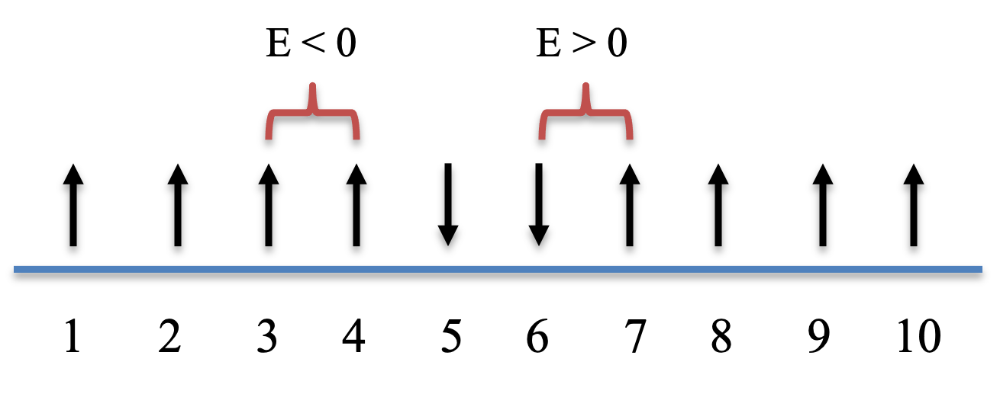
At a fixed temperature \(T\), the equilibrium probability of a configuration follows the Boltzmann distribution
\[ p \propto e^{-E / (kT)} , \tag{8} \]
where we set the Boltzmann constant \(k = 1\) and absorb it into a rescaled \(T\). We sample configurations with Metropolis-Hastings, proposing a move by flipping one randomly chosen spin. The proposal is symmetric, so the move is accepted with
Objective. Sample the 1D Ising model with Metropolis Monte Carlo.
Model. A 1D Ising chain of n spins s_i = +-1 with open ends, energy E = -J*sum s_i*s_{i+1}, sampled from the Boltzmann distribution p proportional to exp(-E/T).
Method. The Metropolis-Hastings algorithm with single-spin-flip proposals and acceptance a = min(1, exp(-(E' - E)/T)).
Test.n = 10 spins, J = 1, temperature T = 1, 1000 steps, random initial spins; seed 1.
Show. A plot of the Ising energy over the Monte Carlo steps.
Verification. At T = 1 the sampler moves between the minimum-energy aligned configuration (E = -9) and higher-energy ones, with about 20% acceptance.
R implementation
# total energy of a spin configuration (open boundary)e_ising <-function(J, x) { x_shift <-c(x[-1], 0)-sum(x * x_shift) * J}# Metropolis sampling of the Ising model at temperature tempmetropolis_ising_1st <-function(nstep, n, J, temp) { x <-matrix(0, nstep +1, n); e <-numeric(nstep +1) x[1, ] <-sample(c(-1, 1), n, replace =TRUE) # random initial spins e[1] <-e_ising(J, x[1, ]) num_accept <-0for (i in1:nstep) { k <-sample(n, 1) # pick a spin to flip xnew <- x[i, ]; xnew[k] <--xnew[k] enew <-e_ising(J, xnew) a <-min(1, exp(-(enew - e[i]) / temp))if (runif(1) < a) { x[i +1, ] <- xnew; e[i +1] <- enew; num_accept <- num_accept +1 }else { x[i +1, ] <- x[i, ]; e[i +1] <- e[i] } }cat("acceptance rate =", num_accept / nstep, "\n")list(x = x, e = e)}set.seed(1)nstep <-10^3res_ising <-metropolis_ising_1st(nstep, n =10, J =1, temp =1)
acceptance rate = 0.225
plot(0:nstep, res_ising$e, type ="l", col =2, xlab ="Step", ylab ="Total energy")
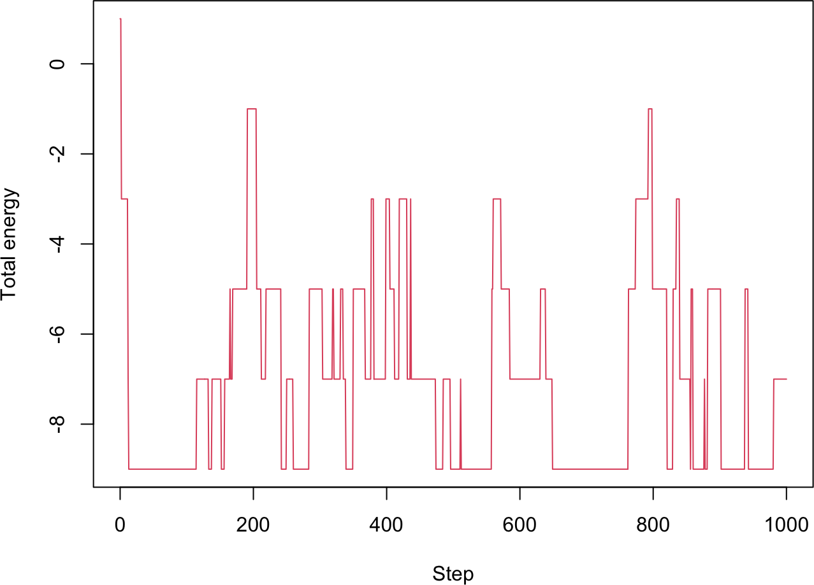
Python implementation
# total energy of a spin configuration (open boundary)def e_ising(J, x): x_shift = np.concatenate((x[1:], [0]))return-np.sum(x * x_shift) * J# Metropolis sampling of the Ising model at temperature tempdef metropolis_ising_1st(nstep, n, J, temp): x = np.zeros((nstep +1, n), dtype=int); e = np.zeros(nstep +1) x[0] = np.random.choice([-1, 1], size=n) # random initial spins e[0] = e_ising(J, x[0]) num_accept =0for i inrange(nstep): k = np.random.randint(n) # pick a spin to flip xnew = x[i].copy(); xnew[k] *=-1 enew = e_ising(J, xnew) a =min(1, np.exp(-(enew - e[i]) / temp))if np.random.uniform() < a: x[i +1] = xnew; e[i +1] = enew; num_accept +=1else: x[i +1] = x[i]; e[i +1] = e[i]print("acceptance rate =", num_accept / nstep)return {"x": x, "e": e}np.random.seed(1)nstep =10**3res_ising = metropolis_ising_1st(nstep, n=10, J=1, temp=1)
At \(T = 1\) the sampler moves between the minimum-energy configuration (\(E = -9\) for ten aligned spins) and higher-energy ones, with an acceptance rate around 20%.
8B.6 A more efficient implementation
Two changes speed up the Ising sampler. First, because the interaction is local, flipping spin \(i\) changes only the one or two energy terms it touches, so we compute the energy difference directly instead of re-summing the whole chain,
\[ \Delta E = \begin{cases}
2 J s_1 s_2 & i = 1 \\
2 J s_{n-1} s_n & i = n \\
2 J s_i (s_{i-1} + s_{i+1}) & \text{otherwise}
\end{cases} , \tag{10} \]
where the \(s_i\) are the current spins before the flip. Second, when \(\Delta E < 0\) the move is always accepted, so we can skip evaluating the exponential in that case.
R implementation
# energy change from flipping spin i, using only the affected termsde_ising <-function(J, x, n, i) {if (i ==1) 2* J * x[1] * x[2]elseif (i == n) 2* J * x[n -1] * x[n]else2* J * x[i] * (x[i -1] + x[i +1])}# check dE against the full recomputationset.seed(1)n <-10; J <-1x <-sample(c(-1, 1), n, replace =TRUE); e0 <-e_ising(J, x)for (i in1:n) { x1 <- x; x1[i] <--x1[i]cat(i, e_ising(J, x1) - e0, de_ising(J, x, n, i), "\n")}
# improved Ising sampler: incremental energy, skip exp when dE < 0metropolis_ising <-function(nstep, n, J, temp) { x <-matrix(0, nstep +1, n); e <-numeric(nstep +1) x[1, ] <-sample(c(-1, 1), n, replace =TRUE) e[1] <-e_ising(J, x[1, ]); num_accept <-0for (i in1:nstep) { k <-sample(n, 1) de <-de_ising(J, x[i, ], n, k)if (de <0||runif(1) <exp(-de / temp)) { x[i +1, ] <- x[i, ]; x[i +1, k] <--x[i +1, k] e[i +1] <- e[i] + de; num_accept <- num_accept +1 } else { x[i +1, ] <- x[i, ]; e[i +1] <- e[i] } }cat("acceptance rate =", num_accept / nstep, "\n")list(x = x, e = e)}# plot the energy and the number of up-spins on twin axesplot_ising <-function(res, nstep) { num_1 <-rowSums(res$x ==1)par(mar =c(5, 5, 2, 5))plot(0:nstep, res$e, type ="l", col =2, xlab ="Step", ylab ="Total energy")par(new =TRUE)plot(0:nstep, num_1, type ="l", col =4, lty =2, axes =FALSE, xlab ="", ylab ="")axis(side =4); mtext("# of +1 spins", side =4, line =3)legend("topright", c("Total energy", "# of +1 spins"), col =c(2, 4), lty =c(1, 2), cex =0.7)}set.seed(1)nstep <-3*10^3res_ising <-metropolis_ising(nstep, n =10, J =1, temp =1)
acceptance rate = 0.2253333
cat("mean energy:", mean(res_ising$e), "\n")
mean energy: -7.063312
plot_ising(res_ising, nstep)
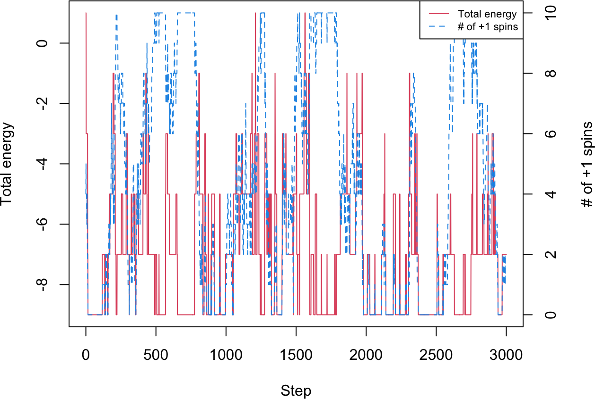
Python implementation
# energy change from flipping spin i, using only the affected termsdef de_ising(J, x, n, i):if i ==0:return2* J * x[0] * x[1]elif i == n -1:return2* J * x[n -1] * x[n -2]else:return2* J * x[i] * (x[i -1] + x[i +1])# check dE against the full recomputationnp.random.seed(1)n =10; J =1x = np.random.choice([-1, 1], size=n); e0 = e_ising(J, x)for i inrange(n): x1 = x.copy(); x1[i] *=-1print(i +1, e_ising(J, x1) - e0, de_ising(J, x, n, i))
# improved Ising sampler: incremental energy, skip exp when dE < 0def metropolis_ising(nstep, n, J, temp): x = np.zeros((nstep +1, n), dtype=int); e = np.zeros(nstep +1) x[0] = np.random.choice([-1, 1], size=n) e[0] = e_ising(J, x[0]); num_accept =0for i inrange(nstep): k = np.random.randint(n) de = de_ising(J, x[i], n, k)if de <0or np.random.uniform() < np.exp(-de / temp): x[i +1] = x[i]; x[i +1, k] *=-1 e[i +1] = e[i] + de; num_accept +=1else: x[i +1] = x[i]; e[i +1] = e[i]print("acceptance rate =", num_accept / nstep)return {"x": x, "e": e}# plot the energy and the number of up-spins on twin axesdef plot_ising(res, nstep): num_1 = np.sum(res["x"] ==1, axis=1) fig, ax1 = plt.subplots() ax1.plot(range(nstep +1), res["e"], "r-", label="Total energy") ax1.set_xlabel("Step"); ax1.set_ylabel("Total energy", color="red") ax2 = ax1.twinx() ax2.plot(range(nstep +1), num_1, "b--", label="# of +1 spins") ax2.set_ylabel("# of +1 spins", color="blue") plt.show()np.random.seed(1)nstep =3*10**3res_ising = metropolis_ising(nstep, n=10, J=1, temp=1)
acceptance rate = 0.26766666666666666
print("mean energy:", np.mean(res_ising["e"]))
mean energy: -6.518827057647451
plot_ising(res_ising, nstep)
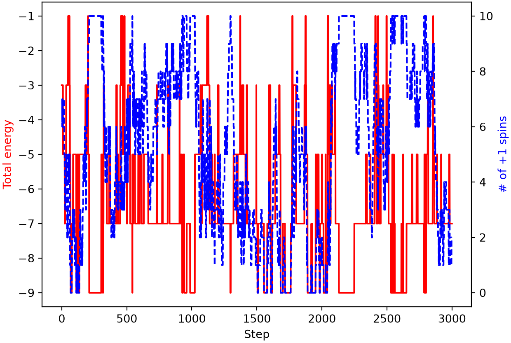
The number of up-spins (blue) reveals two ground states of energy \(E = -9\): all spins up (ten up-spins) and all spins down (zero up-spins). At \(T = 1\) the chain samples configurations across a range of energies and crosses between the two ground states. The mean energy over the run is an ensemble average, which for an equilibrium system equals the long-time average once enough samples are collected.
Temperature controls how freely the chain explores. At a low temperature the uphill moves in Equation (9) become rare, so the chain stays near a ground state; at a high temperature almost every flip is accepted, so it wanders among high-energy, disordered configurations and rarely visits a ground state.
R implementation
set.seed(1)res_low <-metropolis_ising(3*10^3, n =10, J =1, temp =0.3)
acceptance rate = 0.012
cat("mean energy:", mean(res_low$e), "\n")
mean energy: -8.872709
plot_ising(res_low, 3*10^3)
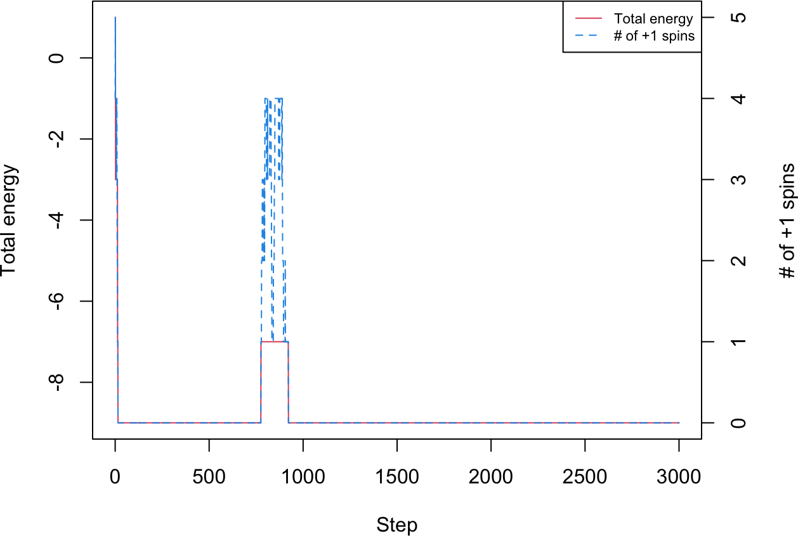
set.seed(2)res_high <-metropolis_ising(10^3, n =10, J =1, temp =3)
At \(T = 0.3\) the sampler locks onto one ground state (here all up-spins) and rarely leaves it. At \(T = 3\) it almost never reaches a ground state and instead samples mostly intermediate energies. The mean energy rises with temperature, tracing out the thermal behavior of the model.
NotePractice Q1
Explore how the Ising sampler depends on its parameters. How does the acceptance rate of metropolis_ising change as the temperature \(T\) increases or decreases, and as the interaction strength \(J\) changes? Run the sampler from several random initial conditions at a low temperature: do you always end up in the same ground state?
Golding, Ido, Johan Paulsson, Scott M. Zawilski, and Edward C. Cox. 2005. “Real-Time Kinetics of Gene Activity in Individual Bacteria.”Cell 123 (6): 1025–36. https://doi.org/10.1016/j.cell.2005.09.031.
Hastings, W. Keith. 1970. “Monte Carlo Sampling Methods Using Markov Chains and Their Applications.”Biometrika 57 (1): 97–109. https://doi.org/10.1093/biomet/57.1.97.
Ising, Ernst. 1925. “Beitrag Zur Theorie Des Ferromagnetismus.”Zeitschrift für Physik 31 (1): 253–58. https://doi.org/10.1007/BF02980577.
Metropolis, Nicholas, Arianna W. Rosenbluth, Marshall N. Rosenbluth, Augusta H. Teller, and Edward Teller. 1953. “Equation of State Calculations by Fast Computing Machines.”The Journal of Chemical Physics 21 (6): 1087–92. https://doi.org/10.1063/1.1699114.